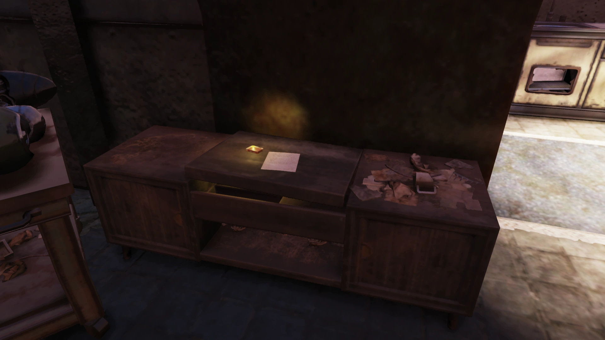
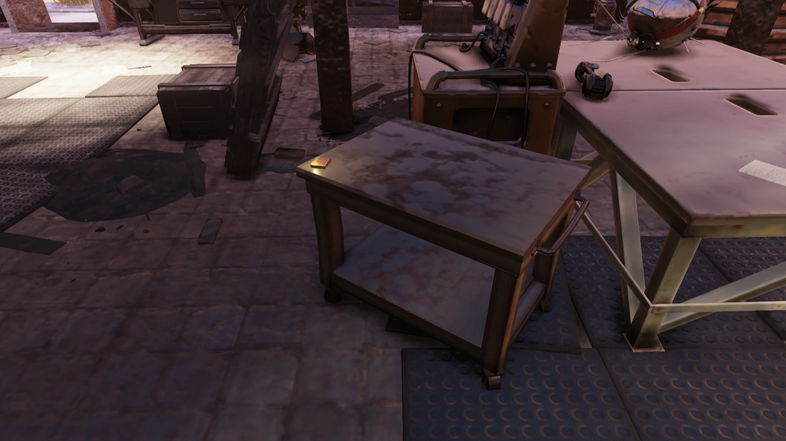
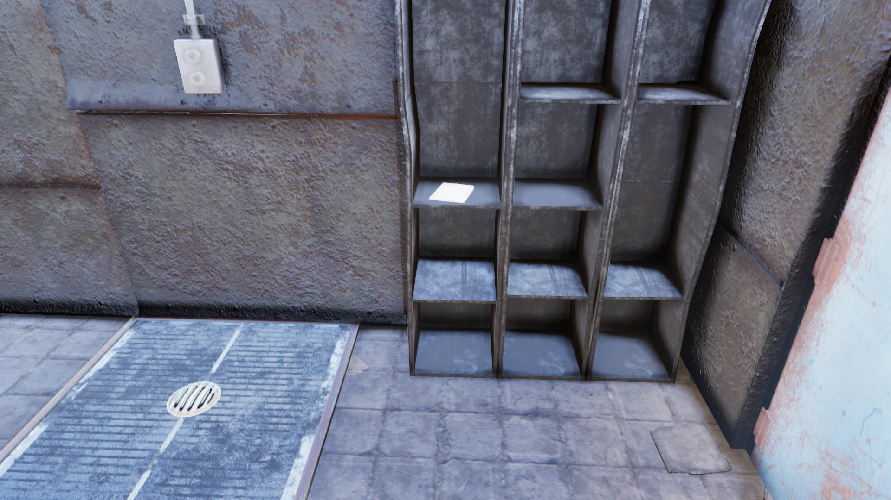
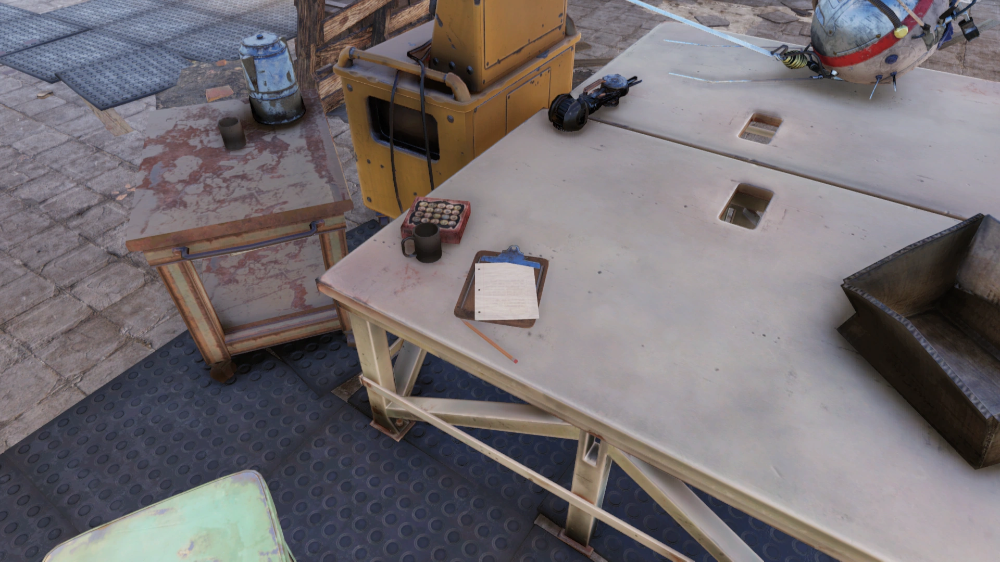
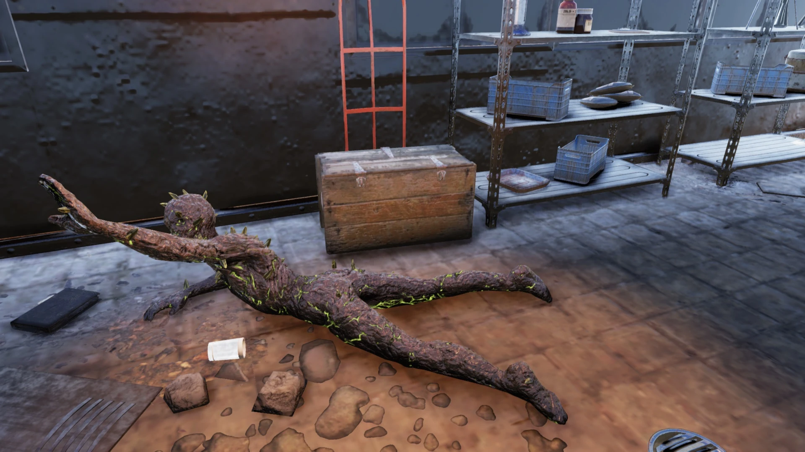
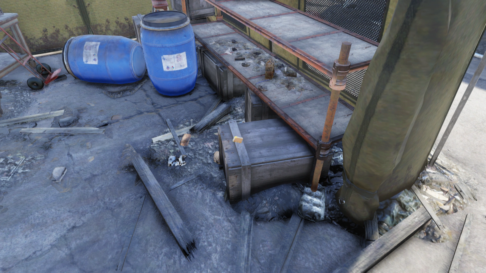
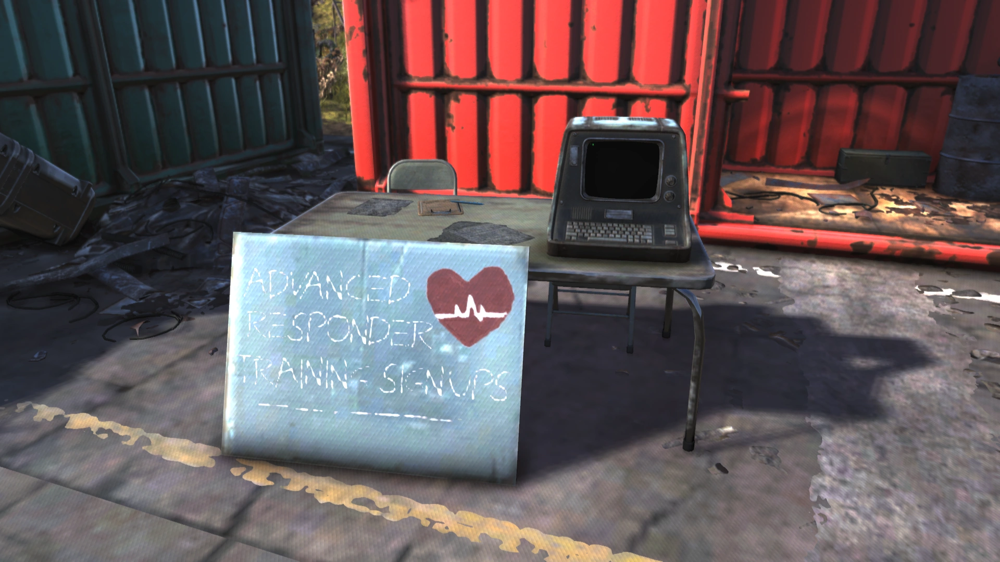
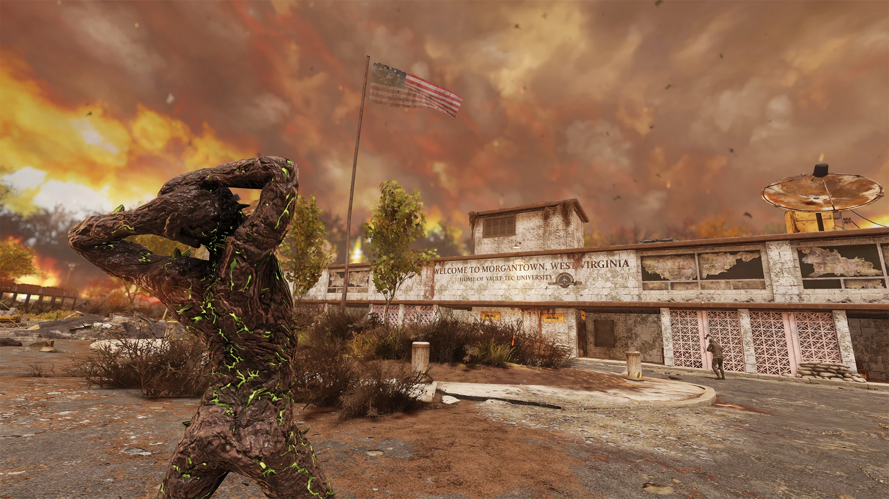

Morgantown Airport
モーガンタウン空港
概要
モーガンタウン空港は、アパラチアの森林地帯、モーガンタウン内にあるロケーションです。
大戦前は交通の要所として機能していましたが、大戦後はレスポンダーの本部として転用されました。
背景
モーガンタウン空港は大戦後、レスポンダーの本部として機能していました。
2096年、生存していた全レスポンダーが空港の防衛のために召集されましたが、スコーチの大群に圧倒され、空港は陥落し、内部の全員が殺害されました。
本部の喪失により、レスポンダーは空港を奪還するための攻勢を行うことも、新たな本部を設立することもできなくなりました。
Vault 76が開放された時点で、確認されているレスポンダーは全員死亡しているか、その任務を放棄してアパラチアから逃亡していました。
レスポンダーが使用していた自動カーゴボット配送システムは今も稼働しており、プレイヤーが着陸パッド付近にいるとイベント「Collision Course」がトリガーされます。
現在は、スコーチと石化した死体が空港を占拠しています。
レイアウト
かつてモーガンタウンへの出入りの交通拠点として機能していた空港は、アパラチアにおけるレスポンダー作戦の中央本部に転用されました。
広大な滑走路、メイン駐車場、格納庫は避難所として使用され、難民への食事提供や治療の拠点としても機能していました。
輸送コンテナも同様に仮設シェルターに改造され、空港のターミナルビルは上級訓練やその他の必要な施設の収容に利用されました。
正面駐車場にはメディカルテントとトリアージステーションがチェックポイント付近に設置されています。
モーガンタウン・モノレールの駅がターミナル前方に位置し、外周は回収された装甲兵員輸送車を含む、入手可能な資材で構築された即席の壁で要塞化されています。
ターミナル北西側にはバスケットコートの隣にコミュニティガーデンがあります。
ワイルドキャロットフラワー、スナップテイルリード、レイザーグレイン、テイト、トウモロコシ、パンプキンなどの農作物が栽培されていました。
赤い輸送コンテナ内にはアーマー作業台、南側の青いコンテナには武器作業台とレスポンダー・ロッキーの遺体があります。
トラックの荷台はシェルターに改造され、その付近にクッキングステーションがあります。
ガーデン北東には複数の墓がある小さな墓地があり、一部は開いたままになっています。
メインの管制塔の外側には即席の足場が組まれ、マシンガンタレットが設置されています。
塔内にはレスポンダーの救難信号の発信源であるラジオと、メロディ・ラーキンが録音したホロテープが置かれています。
エリア内には2つのパワーアーマーステーションがあります。
管制塔北東にある3つの格納庫は、ボットショップ、医療エリア、研究室に改造されています。
ボットショップはかつてミゲル・カルデラの主な活動拠点であり、彼のターミナルが今も残されています。
武器作業台、ティンカー作業台、クッキングストーブ、作動中のフュージョンコア付きフュージョンジェネレーターがあります。
1階にはルート可能なスチーマートランクがあります。
隣接する医療格納庫には4つのファーストエイドキットとレスポンダー研究所ターミナルがあります。
研究室格納庫はフェンスで囲まれた隔離エリア内に位置し、ケミストリーステーションと検査台の上のスコーチの死体があります。
最西部にはクォンセット・ハットがあり、「隔離」と表示されています。
内部にはスコーチ化が進行する様々な段階の死体——一般の死体、骸骨、石化した死体——がセルに収容されています。
エリア奥にはスカイレーンズ・エアの旅客機の残骸があります。機内にはクッキングステーションがあり、コックピットにはヌカ・ガールの段ボールの切り抜きと金庫があります。
飛行機の横にはカーゴボットの着陸パッドがあり、クエスト「Collision Course」に関連しています。
主なアイテム
ホロテープ（11本）
- The Christmas Flood — 飛行場北西端のテント内のクレートの上
- Psych eval: Wyatt Johnson — 飛行場北東端の旅客機残骸内、コックピットの鍵付き金庫内
- Psych eval: Olivia P. Henderson — 医療施設に改造された格納庫の金属棚の上
- Melody Larkin: Dispatch — 管制塔内、ハムラジオの隣
- Camp guide program v3.4 — ロボット修理格納庫のステレオの上（クエスト「Tentative Plans」進行中）
- Volunteer training: Camping 101 — レスポンダー訓練ターミナルからクエスト開始時に取得
- Patrol 1: Training Exercise — レスポンダー訓練ターミナルの「Patrol Supplies」選択で取得
- Patrol 2: Triage Center — トリアージセンターのテント内、鍵付き金庫内
- Patrol 3: Processing Center — レスポンダー・ロッキーの遺体横の鍵付き金庫内
- Patrol 4: Medical Center — 医療センター格納庫奥、台車の上の爆薬箱内
- Patrol 5: Control Tower — 管制塔のターミナルの「Resource Requests」選択で取得
メモ（11枚）
- De'Andre's note — 中央格納庫奥のグリーンフットロッカー内
- Flatwoods supply delivery — ロボットパーツの格納庫、アイボットが置かれたテーブルのクリップボードに添付
- Sweet bean — ロボット修理格納庫のステレオの上
- Flatwoods kiosks — ロボット修理格納庫のシャワーエリア
- Tasks — ロボット修理格納庫のキッチン、シンクの左側
- Camping Syllabus — 空港滑走路エリア北東、ミゲルのキャンプ跡
- I remember you, mom — 北西の墓地、開いた墓の棺の上
- O Holy Night — 難民キャンプエリアのピックアップトラックの荷台、牧師服を着たレスポンダーの死体の上
- DON'T TOUCH — ロボット修理格納庫の上階、歩道の端のプーリーマシンの側面
- Gardening test — 北西の農場、石化した死体と箱の隣の地面
- Sweetheart — 北西セクションのグリーン展示エリア内、右端の椅子の上
ホロテープの内容
🎙️ The Christmas Flood（クリスマスの大洪水）
マリア・チャベス: 私はマリア・チャベスです。今日は2092年12月25日。かつて、戦争前の世界では、この日は愛する人たちと祝う幸せな時間でした。今では、振り返り、追悼する時間です。10年前のこの日、私たちは「クリスマスの大洪水」と呼ぶ悲劇的な出来事で、多くのものを失いました。この録音をすることで、あの洪水とその犠牲者が決して忘れられないようにしたいと思っています。
話は2077年11月、戦争の翌月に遡ります。プレザントバレー・スキーリゾートの生存者たちが、チャールストンに助けと物資を求める代表団を送りました。しかし、街の指導者たちは彼らを追い返しました。当時はあまりにも多くの混乱と必要があったので、無理な要求だったのかもしれません。
援助の獲得に失敗したことで、スキーリゾートの生存者たちの間でリーダーが交代しました。デイヴィッド・ソープという冷酷な男が実権を握り、あの人々を恐ろしいものに変えてしまいました。彼らは欲しいものを力で奪い、立ちはだかる者を殺しました。
数年後、ソープのガールフレンドであるロザリンがチャールストンを襲撃しました。彼らは早期に発見され、戦闘が勃発しました。何人かは逃げ延びましたが、ロザリンは負傷して捕虜になりました。
当時、レスポンダーは街をほぼ運営しており、かなりうまくやっていました。レイダーたちの本拠地に対峙できると考え、山岳地帯に交渉のグループを送りました。囚人の一部を解放すれば見逃してもらえるよう交渉しようとしました。間違いでした。ソープはどうにかミニ・ニュークを手に入れ、クリスマスの朝にサマーズビル・ダムを爆破しました。
私たちはほぼすべてを失いました――家、物資、そして友人や家族の大半を。その後の日々や数週間は、人生で最も辛い時間でした。しかし、どうにか持ちこたえました。ほんの一握りの仲間しか残っていなかったのに、レスポンダーの理念を生かし続けました。これがクリスマスの大洪水の物語です。子供たちに伝えてください。出会う全ての人に伝えてください。できる限り長く、この記憶を生かし続けましょう。
🎙️ Psych eval: Wyatt Johnson（心理査定: ワイアット・ジョンソン）
...:: 機密 ::...
レスポンダー医療部門所有
...:: 機密 ::...
...:: 複製禁止 ::...
...:: 音声記録の書き起こし開始 ::...
マディソン医師: これはレスポンダーのマディソン医師です。患者ワイアット・ジョンソンの心理査定を行います。このセッションは記録されています。こんにちは、ワイアット。
ワイアット・ジョンソン: どうも。
マディソン医師: この査定は非公式の評価であり、あなたの状態をより良く理解するためだけのものです。お分かりですか？
ワイアット: はい、先生。
マディソン医師: いくつか簡単な質問をします。正直に答えてください。まず、レスポンダーでの現在の役割を教えてください。
ワイアット: 化け物が閉じ込められたままでいるようにすること。
マディソン医師: スコーチのことですか？
ワイアット: ああ、歩く悪魔だ。
マディソン医師: なるほど。なぜこの仕事を志願したのか説明できますか？
ワイアット: 志願？ 強制だと思ってた。
マディソン医師: いいえ、完全に任意でした。私たちは依頼を掲示し、面接を行いました。
ワイアット: ああ、母さんがスコーチにやられたから、これは俺への罰だと思ってた。
マディソン医師: いいえ、ワイアット。完全に任意の役割です。あなたのお母さん、ブレンダはスコーチに感染しましたが、だからといって何かの罰があるわけではありません。
ワイアット: 俺が奴らを母さんに近づけた。俺のせいだ。
マディソン医師: いいえ、事故です、ワイアット。
ワイアット: そんなの関係ない。これが俺への罰だって分かってる。
マディソン医師: ワイアット、面接の時あなたは末期の病気があると言いましたね。それで隔離区域の警備員を選んだと。
ワイアット: ああ、末期の病気がある。「人生」って名前のな。
マディソン医師: ワイアット、協力してください。
ワイアット: もう行っていい？ リヴィーに今夜ホットドッグを焼くって約束したんだ。やっとグリルが直ったから。
マディソン医師: もうすぐ終わります。あと少し質問させてください。
ワイアット: グリルで焼くとき、灯油が少し漏れて、あの化け物の臭いを消してくれるんだ。
マディソン医師: *ため息* ……すまない。終わりだ。もう行っていいよ。
音声記録の書き起こし終了 ::...
===査定結果===
ワイアットとの継続的な面接の結果は困難かつ心配なものでした。被験者は協力を拒否し、精神病と重大な乖離の兆候を示しています。被験者は距離を置き、不安定性、PTSD、分離不安の兆候を見せています。あるいは単にふざけたガキなだけかもしれません。ただし、オリビアとは非常にうまくやっているようです。推奨事項: 毎週の査定を継続。注意深く観察すること。ただしオリビアの監督下であれば大丈夫でしょう。
===医師のメモ===
マリアにホロテープ在庫の状況を確認するよう連絡すること。他の目的で供給が削減されているのが見え始めている。テープの消失について調査が必要。犯人が見つかるまで、冗長性のために音声からテキストへの書き起こしを続ける。
🎙️ Psych eval: Olivia P. Henderson（心理査定: オリビア・P・ヘンダーソン）
...:: 機密 ::...
レスポンダー医療部門所有
...:: 機密 ::...
...:: 複製禁止 ::...
...:: 音声記録の書き起こし開始
マディソン医師: これはレスポンダーのマディソン医師です。患者オリビア・ヘンダーソンの心理査定を——
オリビア: 「P.」を忘れてるわ。
マディソン医師: 患者オリビア・P・ヘンダーソンの心理査定を行います。このセッションは記録されています。こんにちは、オリビア。
オリビア: またよろしくね、先生。
マディソン医師: 始めましょう。まず、レスポンダーでの現在の役割を教えてください。
オリビア: そうねえ。最初はボランティアとして始めたわ、今どきのみんなと同じようにね。あまり役に立たなかった。で、ここの隔離区域のことを知って、ここにいなきゃって思ったの。
マディソン医師: 記録のために、モーガンタウン空港の隔離区域はスコーチ現象の研究と封じ込めを行う場所です。
オリビア: ええ、そうね。でもそんなきれいな言葉では呼ばないわ。悪夢よ。
マディソン医師: あなたの仕事は隔離区域の警備とスコーチの犠牲者の世話ですか？
オリビア: ええ。あの哀れな魂たちを見張って、閉じ込められたままにしておくのが私の仕事よ。
マディソン医師: なぜこの仕事を選んだのか教えてもらえますか？
オリビア: 隔離警備員の募集が出た時、注意書きが付いてたのよ。
マディソン医師: なるほど。説明してもらえますか？
オリビア: 永久配属ってこと。つまり……私もここに永久に隔離されるの。スコーチは危険すぎて、感染力が非常に高い。だから二度と出られないわ。
マディソン医師: なぜその仕事を選んだのですか？
オリビア: それは簡単よ。もう言ったと思うけど。ガンよ。
マディソン医師: はい、爆弾投下の直前にガンの末期宣告を受けたとおっしゃっていましたね。
オリビア: ええ。
マディソン医師: でもここまで長く生き延びていますよね。医者は余命数年と言っていたのに。何が起きたと思いますか？
オリビア: その辺はよく分からないわ。色々考えたんだけど、放射線が進行を遅らせてるのかも。それか、えーと……リセッション？
マディソン医師: リミッション（寛解）ですね。
オリビア: ああ、それ。寛解してるのかもしれないわね。
マディソン医師: もう一人の隔離警備員、ワイアットについて教えてください。二人はうまくやっていますか？
オリビア: ああ、ワイアットね。息子を思い出すわ、安らかに眠れますように。賢い子よ。とんでもなく不運だけど、賢い。あの子は人生が与えたものに値しないわ。
マディソン医師: 本当にそうですね。今週中にワイアットの査定も予定しています。
オリビア: 優しくしてあげて。あの飛行機の中に一緒に閉じ込められてから、家族みたいになったの。
マディソン医師: そうします。残念ながら時間切れです。本日はありがとうございました。レスポンダーとしてもあなたの献身に感謝しています。
オリビア: お酒を届け続けてくれればいいわよ、先生。そうすれば満足よ。
マディソン医師: もちろん。それくらいは当然です。
音声記録の書き起こし終了 ::...
===査定結果===
オリビアとの継続的な面接は、当初の仮説が概ね正しかったことを証明しました。被験者は認識力があり、機知に富み、精神的に健全で、隔離での業務を継続する心理的適性があります。また頑固さ、意図的な無知、皮肉の兆候も見られます。背景的・潜在的なうつ病の兆候に注意を続けます。不安は極めて高いですが、今はそうでない人がいるでしょうか？推奨事項: より遅いペースでの査定を継続。隔月で十分でしょう。心配なのはもう一人の警備員の方です。
🎙️ Melody Larkin: Dispatch（メロディ・ラーキン: 通信記録）
メロディ・ラーキン: 大変な一週間だったわ、まったく。またあの忌々しいスコーチどもと戦って、優秀な仲間をさらに失った。で、今度はチャベスが新しい無線信号を拾ったって言ってきたの。誰かが助けを求めてる。彼女は私のチームで追跡して見つけてほしいと。そう遠くないわ。南の方で信号が強くなっているのを追跡済み。問題は、彼らを見つけるにはレイダーの支配域を真っ直ぐ突っ切らなきゃならないってこと。今はそんな時間も人手もない。
だから、言うのは辛いけど、無理だって伝えなきゃならない。今はダメだ。私のチームは最後の防衛線だから、彼らを連れて野犬追いみたいなことに出掛けたら、次のクリスマスの大洪水みたいな状況に身をさらすことになる。だから絶対にそんなことはさせない。たとえどこかで誰かが私たちを必要としているとしても。まったく、時代は変わったもんだわ。
🎙️ Camp guide program v3.4（キャンプガイドプログラム v3.4）
codebase mod prog
;camp guide prog v3.4 beta
;;notes: これはプライマリーキャンプガイドAIをロードします
;;;自分のロボットでしか動かない
;;;;バグを直すまで -mcaldera
//../../../brain/this.shutdown(now)
//../../../brain/run *camp-guide*.mod
//../../../ai/tether==true?del tether:stop
//../../../ai/mod loyalty=id.human
//../../../ai/del follow id.owner
//../../../brain/this.wakeup(now)
===./execute===
... 実行中 ....
...
エラー:
プログラムは以下のレスポンダー・プロテクトロンモデルにのみ対応: ボランティアボット、毒物管理ボット（廃止）、獣医ボット（廃止）、ダンスボット（廃止）
このプログラムを他のデバイスで実行するとホロテープが損傷する可能性があります。
🎙️ Volunteer training: Camping 101（ボランティア訓練: キャンプ入門）
ミゲル・カルデラ: レスポンダー生存者ボランティアプログラム: 上級訓練: キャンプ。ミゲル・カルデラ著——ロボットプログラマーの天才！
パート1: 完璧なキャンプ場所を見つけよう。世界が変わってしまった今、安全でいるのは難しい。キャンプは昔は安全だった。*笑い* まあ、強風が来るまではね。最近は何も安全じゃない。キャンプ内でさえ、誰かに傷つけられるかもしれない。完璧な場所はもう重要じゃない。重要なのは防御だ！信頼できる人の近くに建てて背中を守ってもらうか、自分の代わりに背中を守る物を作ればいい！問題なし！誰にでもできるさ！
キャンプは移動式だってことを覚えておこう。僕たちは今や冒険者で、冒険と驚異と危険に満ちた見知らぬ土地でキャンプをしているんだ。だからこまめにキャンプして、たっぷり休もう。戦争前、僕はリタイアしてキャンプに行くつもりだった。今は毎日、永遠にできる！夢が叶ったんだ！好きなことをしよう、だろ？
さあ、僕のキャンプに来て、ロープの結び方やフレーミング技術を教えるよ。それから役立つ物資を案内する！頑張って、ボランティア！
🎙️ Patrol 1: Training Exercise（パトロール1: 訓練演習）
ケシャ・マクダーモット: レスポンダー生存者ボランティアプログラム: 上級訓練: 物資確保！ケシャ・マクダーモット著。ボランティアのレスポンダー（あなたのような）は、定期的に物資の補給を手伝う必要があります。もし備蓄が尽きたら、大きな問題になります。初めてのパトロールなので、手順を説明しますね。まず、下の階に行って裏口からトリアージセンターへ向かってください。この演習ではモーガンタウン空港の主要エリアを巡回します。定期的にこれらの備蓄を補充したいと思うでしょう。
🎙️ Patrol 2: Triage Center（パトロール2: トリアージセンター）
ケシャ・マクダーモット: よくやりました、ボランティア。トリアージセンターは最も重い被害者を受け入れているので、ここの物資はおそらくいつも不足しているでしょう。負傷者の間を歩きながら棚を補充するだけっていうのは辛いことだと分かっています。でも、あなたにこれをやってもらう必要があるんです。他のレスポンダーが彼らの世話をします。私たちには頼れる人が必要なんです。全員が安全なら、何でも再建できますから。世界は破壊されたんじゃない、ただ助けが必要なだけなんです。次の物資キャッシュには鍵がかかっていますが、レスポンダー・ロッキーから受け取る必要があります。ケシャにパトロールを任されたと言ってください。
🎙️ Patrol 3: Processing Center（パトロール3: 処理センター）
ケシャ・マクダーモット: 次は医療センターへ向かってください。パトロールは素早く終わらせてね、レスポンダー・データベースにロックアウトされないように。処理センターはトリアージに運ばれてきた新しい生存者のための食料と飲料の物資を保管しています。だから在庫を保つことが本当に重要なんです。スコーチ以来……いや、爆弾以来、在庫を保つのはずっと混乱しっぱなしで……もう永遠のように感じるわ。学生たちにいつも言っていたように：困難はいつもそれぞれ違う形をしている、でもあなたもそうよ。乗り越えるのに十分な強さがあればいいの。でも補足があって……乗り越えるにはリソースとサポートも必要で、完全に一人では無理なの。さあ、クリニックに行って。
🎙️ Patrol 4: Medical Center（パトロール4: 医療センター）
ケシャ・マクダーモット: ここにいる間に、医師たちに何か特別な物資の要望がないか聞いてみてね。その後、最後の場所、管制塔へ向かってください。見ての通り、常にこれらの物資を補充し続けなければ人々を支えられません。そして物事が静かになる兆しは全くないの！管制塔は滑走路にあって、最後のパトロール地点よ。ボランティアプログラムを設立して本当に良かったわ。おかげでたくさんのレスポンダーのボランティアを得られたの。ダッサはフラットウッズで良い仕事をしてくれてるわ。
🎙️ Patrol 5: Control Tower（パトロール5: 管制塔）
ケシャ・マクダーモット: そんなに難しくなかったでしょう？ ミゲルがボットにこれらの物資キャッシュを補充するようプログラムしていますが、必要な量には全然足りません。だからボランティアを集めて、正式な上級訓練として少なくとも1回はパトロールをやってもらうのが目標です。あなたの助力に心から感謝します。レスポンダー・データベースにログインすれば、追加のキャッシュを調べることができます。ありがとう、ボランティア！そして覚えておいて：他の人を助けることは、自分自身を助けることにもなるのよ。
メモの内容
📝 De'Andre's note（デアンドレのメモ）
愛しいあなたへ、
アビーが彼女のバンカーを記念日の計画に使っていいって言ってくれたわ。まだほんの数ヶ月……ええと、2ヶ月3週間と4日だけど、すごくワクワクしてるの！あなたは私の人生を変えてくれた、デアンドレ。分かっていてほしい。
愛を込めて、
リディア
📝 Flatwoods supply delivery（フラットウッズ物資配送）
ミゲルへ、
頼まれた通り、物資の一部を金庫に届けたよ。
どこにいるか分からなかった。また森の中のどこかかな？ 君のロボットもどこにも見当たらないから、安全だろうと思ってる。
マリアに何かフラットウッズに持ち帰るものがあるか聞いてみるから、1日か2日はこっちにいるよ。
僕を見つけてくれ！寂しいよ！
ギャリー
📝 Sweet bean（スイートビーン）
僕のかわいいギャリービーンへ、
僕はキャンプにいるよ——マリアが「精神衛生の日」をくれたから、リラックスできるんだ。来てよ！フラットウッズからあのコンフォートフードを持ってきてくれると嬉しいな。ピクニックしよう！
ボランティアが来ても心配しないで、ロボットが対応してくれるはず。そのためのプログラムを書いたから、やっとリラックスして君と一緒に大自然を楽しめるよ。
愛してるよ、ディアハート。
-ミゲル
📝 Flatwoods kiosks（フラットウッズ・キオスク）
タスク: フラットウッズ用の新しい「セルフサーブ・ボランティア・キオスク」システムをプログラムする。
1日に数十人のボランティアを処理でき、地元のレスポンダーが時間を寄付して基本的なスキルを教えられるシステムにすること。
担当者はケシャとデルバート。二人とも、このプログラムのモデルになることを了承済み。
📝 Tasks（タスク一覧）
今週中：
- キャンプ・プログラムのバグを修正
- フラットウッズのキオスクに問題がないか確認
- ギャリーへの次回訪問用のプレゼントを用意
- キャンプにもう一つ椅子を持っていく
📝 Camping Syllabus（キャンプ講座シラバス）
キャンプ講座シラバス
1. 安全な場所を見つけよう！近くに新しい動物の——あるいは人間の！——フンがないか確認。覚えておこう。フンを見つけたら、退散しよう！
2. リサイクル素材を使ってテントを建てよう！スクラップはどこにでも見つかるよ。
3. キャンプの利点は？ クッキングステーション、そして自分だけの隠し場所まで！
課題: 学生は最寄りのレスポンダーに報告し、キャンプを建設すること。キャンプ内に簡単なクッキングステーションと隠し場所ボックスを建設し、その知識を地元のレスポンダーに実演すること。
📝 I remember you, mom（覚えてるよ、お母さん）
お母さん
あの人が僕らを捨てた後、一人で僕を育ててくれたね……ちゃんと学校に行かせてくれた。自分よりもいい生活を送れるようにしてくれた。
いつも幸せだった。そうじゃないように見えた時でも。お母さんはいつもそばにいてくれた。
でも、いざという時……僕はそばにいなかった。
絶対に自分を許さない。
絶対に。
📝 O Holy Night（オー・ホーリー・ナイト）
オー・ホーリー・ナイト
オー・ホーリー・ナイト、星は輝き、救世主がお生まれになった夜
長い間、世界は罪と誤りの中であえいでいた。主が現れ、魂はその価値を知った
希望のときめきに、疲れた魂は喜び、彼方に新しい栄光の朝が明ける！ 膝をつきなさい！ オー
天使の声を聞きなさい！ オー聖なる夜！ キリストが生まれた夜！ オー聖なる——
... オー夜よ、オー聖なる夜よ！
📝 DON'T TOUCH（さわるな）
さわるな
最後のスコーチの攻撃からちゃんと動かないから、現状のまま封印した。
とにかく、さわるな。
今のところ必要ないし。
-ミゲル
📝 Gardening test（園芸テスト）
園芸テスト
名前: サマンサ
問題1:
全ての植物に必要なものは何？
水とひかり
問題2:
光合成って何？ お父さんお母さんに聞いてみよう！
しょくぶつがエネルぎーをえるほうほう！！
問題3:
ガーデンのお気に入りの植物は何？
テイト！
問題4:
ガーデンクラスで毎日使う道具は何？
シャベル
ボーナス問題:
昨日のクラスで学んだ植物の名前は？
パ ン プ キ ン！！！
よくできました、サマンサ！ 5/5正解
📝 Sweetheart（スイートハート）
私のかわいい赤ちゃんへ、
とても欲しかったの……でも叶わなかった。でも今はそれで良かったって分かるの、すべてを考えると……
コレクティブル
- Vault-Tecボブルヘッド（2箇所）
- 隔離テントの一つ、メドキットの隣
- 研究室格納庫の棚の上
- 雑誌（2箇所）
- 管制塔の最上階、ホットプレートとコーヒーポットの近くデスクの左側
- 旅客機残骸内部、小さなテーブルの上
その他のアイテム
- レスポンダー・ブラボー・ステーションの鍵 — レスポンダー・ロッキーの遺体から入手。空港のレイダー金庫を開錠
- フュージョンコア — ボットショップ格納庫のフュージョンジェネレーター内
- レシピ（2個） — 旅客機残骸内部のテーブルとクッキングストーブ
登場作品
モーガンタウン空港は『Fallout 76』にのみ登場します。
舞台裏
ゲーム内のモーガンタウン空港は、実在のモーガンタウン市営空港（Morgantown Municipal Airport / Walter L. Bill Hart Field）をモデルにしています。
空港概要
モーガンタウン市営空港（IATA: MGW / ICAO: KMGW）は、ウェストバージニア州モノンガリア郡モーガンタウンの東約3マイル（4.8km）に位置する公共空港です。
正式名称は「ウォルター・L・ビル・ハート・フィールド」（Walter L. Bill Hart Field）としても知られています。
主要スペック
- 標高: 1,244フィート（379m）
- 滑走路: 18/36 — 5,198 × 150フィート（1,584 × 46m）、アスファルト舗装
- コード: IATA: MGW / ICAO: KMGW / FAA LID: MGW
航空サービスの歴史
1940年代後半にはキャピタル航空が乗り入れを始め、その後もエア・ミッドウェスト、USエアウェイズ・エクスプレス、コルガン航空（ユナイテッド・エクスプレス）、シルバー・エアウェイズ、サザン・エアウェイズ・エクスプレスなど、数多くの航空会社が変遷を経てサービスを提供してきました。
現在はユナイテッド・エクスプレス（スカイウェスト航空が運航）がワシントン・ダレス国際空港（IAD）への定期便を毎日運行しています。
この路線は米国連邦政府の「Essential Air Service（EAS）」プログラム——地方空港への航空サービスを維持するための補助金制度——によって支えられています。
将来の拡張計画
より大型の機体の離着陸に対応するため、滑走路を1,001フィート延長する計画がFAA（連邦航空局）に申請されています。
現実の空港情報は Wikipedia: Morgantown Municipal Airport より取得。空撮写真は Wikimedia Commons / Public Domain（USGS）。
ギャラリー

Camp guide program v3.4（1箇所目）

Camp guide program v3.4（2箇所目）

Flatwoods kiosks

Flatwoods supply delivery
Patrol 2: Triage Center（金庫内）

Patrol 4: Medical Center（クレート内）
Psych eval: Olivia P. Henderson
Psych eval: Wyatt Johnson（コックピットの金庫）

The Christmas Flood

レスポンダー訓練ターミナル

Nuclear Winter ロード画面
感想
モーガンタウン空港は、レスポンダーの栄光と悲劇の両方が凝縮された、Fallout 76の中でも特に感慨深いロケーションです。
空港全体がレスポンダーの「最後の砦」として機能していた痕跡——トリアージテント、コミュニティガーデン、改造された格納庫——を見ると、彼らがいかに組織的に、そして必死に人々を守ろうとしていたかが伝わってきます。
特に心に残るのは、ワイアットとオリビアの心理査定ホロテープ。二人の隔離警備員が、互いを支えながら「二度と出られない」任務に就いているという設定が切ない。ワイアットの母への罪悪感、オリビアの末期がんを抱えながらの献身——荒廃した世界で人間の絆がどれほど大切かを教えてくれます。
墓地に残された「覚えてるよ、お母さん」のメモは、おそらくワイアットが書いたもので、彼の母への想いが読み取れます。
ミゲルとギャリーのラブストーリーも素敵です。ロボットプログラマーと物資配送係という役割を超えた、温かいメモのやり取りが格納庫のあちこちに残されている。サマンサの園芸テストの可愛らしさとの対比で、ここがかつては「生きた」コミュニティだったことを実感させられます。
そして何より、メロディ・ラーキンの通信記録。助けを求める信号が聞こえているのに、人手が足りず救助に行けない——その苦渋の決断が、レスポンダーの最期を象徴しているように思えます。
ケシャのパトロール訓練テープを聞きながら空港を巡ると、「かつてここで働いていた人々」の気配を感じずにはいられません。
> COMMENTS